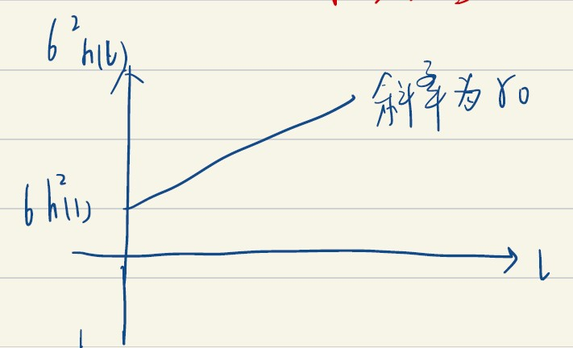

条件异方差系列模型
前一章节，我们讲了一阶矩信息（条件均值）的描述和分析。在这一章中，我们将着重讨论二阶矩信息（条件方差）的分析。说到条件异方差，股票是一种较为常见的场景。而股票的波动率，即股票对数收益率的条件标准差，则是常见的一个讨论对象：
3.1 波动率
参考书目
参阅：Tsay, R. S. (2013). Analysis of financial time series. John Wiley & Sons. 章节4。
股票波动率的特征有：
- 无法被直接观测；
- 存在波动率聚集现象，在部分时间段上存在较高的波动率，而在零一段时间内波动率较低；
- 波动率以连续时间变化，或者说，波动率序列的跳跃不频繁；
- 波动率不发散到无穷，或者说，波动率序列是有界的、平稳的；
- 波动率常存在一个“杠杆效应”，波动率对标的资产价格的大幅上升/下降反映不一致（不对称）。
波动率是不连续的
由于存在休市时间，波动是不连续的，特别是在隔夜的时段内波动率无法被直接观测，当然，日内（交易时段内）连续的波动率变化是可以得到计算的。
波动率可以应用在多种场景中：
第一，衍生品定价。如BSM公式，BSM模型假定标的资产价格服从几何布朗运动（GBM）。而BSM对欧式期权的定价公式为：
显然，里面包含着\(\sigma_j\)，即标的资产对数收益率的状态标准差，但这种“波动率”被称作隐含波动率，即已知当前价格的情况下根据BSM公式反推得出的波动率值。
关于BSM模型
以上内容表示了已知主要参数后，Black-Scholes-Merton模型对欧式看涨期权（European Call）的定价方法。其中，\(S_j\)代表标的资产的价格(underlying asset price)，\(K\)代表期权的执行价格(strike price)，\(\mu_j\)代表标的资产的收益率均值，\(\sigma_j\)代表标的资产的波动率【即我们要求的那个波动率】，\(r_f\)是市场无风险收益率，如果是连续计息，则\(1/(1+r_f)\)表示的贴现过程可以表示为\(e^{-r}\)。数学记号\(\Phi\)表示标准正态分布的累积分布函数（PDF）
其遵循的理论背景、基本假设，以及推导过程请参阅BSM模型原文献：
- Black, F., & Scholes, M. (1973). The pricing of options and corporate liabilities. Journal of political economy, 81(3), 637-654.
- Merton, R. C. (1973). Theory of rational option pricing. The Bell Journal of economics and management science, 141-183.
或者相关教材，如Huang & Litzenberger的"Foundations for Financial Economics"（《金融经济学基础》），Sheldon Ross的“An Elementary Introduction to Mathematical Finance”(《数理金融初步》)。John Hull的"Options, Futures, and Other Derivatives"（《期权、期货和其他衍生品》）也有相关内容。
第二，风险管理。例如在险价值(Value of Risk, VaR）。
第三，资产组合选择与定价。例如Markwitz(1952)模型，对于一组资产来说，有\((\mu,\Sigma)\)，前者为资产的收益率均值矩阵，后者为资产的协方差矩阵。从而衍生为动态模型，即\((\mu_t, \Sigma_t)\)，做成AR(1)模型，即：
第四，区间预测。通过波动率，在点估计的基础上求其置信区间。
波动率计算
波动率的计算方法有多种，如隐含波动率，或利用高频的历史信息近似计算。
第一， 隐含波动率。已知资产的价格，带入BSM公式，辅以其他的参数，解出\(\sigma_j\)。现实中常见的例子如VIX指数。 第二，高频下的估计。如果利用高频的历史信息，并将时间区段无限细分，也可以近似的计算当前的波动率。令\(r_t\)表示某资产对数收益率，假定某月内存在等间隔的交易日，我们可以观测到一条对数收益率的序列\(\{r_t\}\)，从而满足:
高频下的波动率估计
但实务中，高频数据估计可能存在较高的误差
则称
为\(r_t\)已实现的波动率，其中假定\(\{r_{t,i}\}_{i=1}^n\)为均值为0，方差有限且独立同分布的随机变量序列。基于以上假定和设定，经验结果表明\(\ln(RV_t)\)序列近似服从于高斯ARIMA(0,1,q)模型。
第三， 计量模型估计。使用计量模型进行估计的思路是，资产收益率的波动率来自于资产定价模型的扰动，而资产价格的扰动项\(\{a_t\}\)虽然非序列相关，但是可能存在“相依”的关系。下面介绍计量模型的结构，已知\(t-1\)时刻下的信息集\(F_{t-1}\)，其\(r_t\)的条件均值和条件方差为：
扰动项的“相依”
其证据是，在实际观测中，我们经常观测到\(|r_t|\)或者\(r_t^2\)存在强烈的序列相关性。
而如果\(\{r_t\}\)是弱平稳序列，则\(r_t = \mu_t + a_t\)，对应有：
基于以上内容，可以解得\(\sigma_t^2\)的形式：
3.2 建立异方差模型的准备
异方差模型可以分为两类：
- 确定函数来刻画\(\sigma_t\)的演变，代表模型如GARCH；
- 随机方程来描述\(\sigma_t^2\)，如BSM模型，不作为本课程讲述内容。
本课程主要讲述的是单变量波动率模型，其最经典的模型是Engel(1982)提出的自相关条件异方差（ARCH）模型，及其身后的改进型。
- ARCH模型，由Engel(1982)提出。前面提到了股票波动率的聚集(clustering)现象，而ARCH模型最早提出了如何刻画波动率聚集现象。
- GARCH。由Bollerslev(1986)基于ARCH改进，其贡献在于解决了ARCH在低阶参数上的问题。
- GARCH-M模型。加入了均值调整。
- I-GARCH。解决了波动率尺度上的单位根问题。
- E-GARCH。Nelson(1991)提出。
- T-GARCH。Zakoian(1994)提出。E/T-GARCH模型描述了波动率序列中存在的杠杆效应。
- CHARMA，即“条件异方差自回归平均移动模型”。由Tsay(1987)提出，该模型允许引入了\(a_t\)序列的滞后项之间的交叉项。
后一类思路（随机方程）的代表如：
- RCA，即“随机系数自回归模型”。由Nicholls(1982)提出，允许了参数随时间\(t\)的变化而变化。
- SV，即“随机波动率模型”。由Melino(1990)提出。
建立波动率模型的步骤
- 通过检验数据的相关性，首先建立条件均值方程。具体的内容，请见上一大章节（AR/MA/ARMA/ARIMA)。
- 对均值方程的残差，即\(\{a_t\}\)序列做ARCH效应检验。
- 根据前序ARCH效应检验的结果决定——如果显著，则可以指定一个波动率方程进行拟合。
- 检验所拟合的模型。
ARCH效应检验
ARCH效应检验的思路是。记\(a_t = r_t - \mu_t\)为均值方程的残差，来检验\(a_t^2\)的条件异方差性（也就是所谓的“ARCH效应”）。换句话说，我们要检验\(\{a_t^2\}\)是否是独立同分布的，一般有两种检验方法。
- Ljung-Box检验。思路是检验序列\(\{a_t^2\}\)是否序列相关，即\(H0: \rho_1 = \rho_2 = ... = \rho_m = 0\)。
- 拉格朗日乘子（LM）检验。
Lagrange Multiplier Test
在如下的线性回归中，用一个F统计量，检验：
中\(\alpha_i = 0\)，即\(H0: \alpha_1 = \alpha_2 = ... = \alpha_m = 0\)。其中\(e_t\)为误差项，\(m\)为指定的阶数，\(T\)是样本容量。进而构建F统计量如下：
3.3 ARCH模型
在通过ARCH效应检验后，就可以用ARCH模型做拟合了。Engel(1982)对ARCH模型的推导中，首先拆解了扰动项\(a_t\)：
显然，上面的函数形式表明（1）ARCH模型中的扰动项\(a_t\)，不相关，但不是独立的，是“相互依存”的；（2）函数描述了\(a_t\)的不独立性。其中，\(\epsilon_t\)为独立同分布且均值为0、方差为1的随机序列[^5]；而\(\alpha_0 > 0\)且\(\alpha_i \geq 0, \quad \forall i > 0\)。
这一模型表明，如果存在一个比较大的过去扰动\(\{a_{t-i}^2\}_{i=1}^m\)，按照\(\sigma_t^2\)的模型设定，就会导致较大的当期波动率\(\sigma_t^2\)，从而可能导致较大的当期扰动\(a_t\)，进而可能造成当期存在较大的\(r_t\)，再进一步，就可能导致未来出现大的\(\sigma_t^2\)。这一个影响链条的存在，使得大的扰动倾向于导致另一个大的扰动紧随着出现，从而描述了波动性聚集现象。因而，这种波动性聚集的现象也被称作ARCH效应。
ARCH(1)模型的性质
ARCH(1)指的是，当期的扰动仅与上期的扰动相关。即：
第一， 无条件均值。扰动的无条件均值为：
第二， 无条件方差。扰动的无条件方差的计算可以变为期望的形式：
第三， ACF。自己推，本质上是\(\operatorname{Var}(a_t a_{t-l})\)。
第四， 尾部性。由于讨论对象的特殊性，扰动项很在意较大的波动率情形，因而需要讨论扰动项\(a_t\)的尾部性质。
尾部性的讨论
为了讨论方便，这里要求\(a_t\)的四阶矩有限，并假定\(\epsilon_t \sim N(0,1)\)。那么\(\epsilon_t\)的峰度为3。基于以上内容展开推导：
由上面第一式得，\(E(\epsilon_t^4) = E(a_t^4/\sigma_t^4) = 3\)，从而有\(E(a_t^4) / E[(\sigma_t^2)^2] = 3\)，即\(E(a_t^4) = 3 E[(\alpha_0 + \alpha_1 a_{t-1}^2)^2]\)：
那么\(a_t\)的峰度为：
分式结构显然大于1，因而\(a_t\)的峰度\(K_a\)显然大于3。
以上内容说明：
- \(\{a_t\}\)的尾部特征比正态分布的尾部要厚。这说明条件ARCH(1)模型的扰动，比高斯白噪声序列更容易产生极端值。
- 在峰度的讨论中我们发现\(1-3\alpha_1^2 > 0\)（这个条件出现在\(K_a\)最终形式的分母上），从而使\(\alpha_1\)的取值范围进一步限定在\(0 < \alpha_1^2 < 1/3\)上。
ARCH模型的优劣
其优点在于：
- 结构简单，方便描述金融市场中的波动率聚集现象；
- 描述了金融市场中收益率扰动项的厚尾性。
如果讨论尾部性时假定\(\epsilon_t\)服从学生t分布，则更进一步可以推导出\(a_t\)序列是尖峰厚尾的。
缺点在于：
- 假定了正负扰动对波动率存在相同的影响（没有考虑实际中扰动影响的不对称性）；
- ARCH模型对参数的限制较强，例如ARCH(1)要求\(\alpha_1^2 \in (0,1/3)\)；
- 对波动率变化的解释性不强；
- ARCH模型对波动率的预测会偏高，因为ARCH模型对孤立的一个巨大扰动反应较为迟钝。
ARCH模型的建模过程
第一步， 定阶。如果ARCH效应检验结果显著，则可用\(\{a_t^2\}\)序列的PACF来确定ARCH模型的阶数。
证明：PACF可以用于对ARCH模型的定阶
下面简单证明PACF可以用于ARCH的定阶。对于ARCH(m)模型，有：
对于给定的样本，可知\(a_t^2\)是\(\sigma_t^2\)的无偏估计。进而可建立\(\{a_t^2\}\)的\(m\)阶自回归模型，即AR(m)。定义残差序列\(\eta_t = a_t^2 - \sigma_t^2\)，则可证明\(\{\eta_t\}\)是一个均值不为0的鞅差序列（martingale difference series）。进而，ARCH(m)模型可以被改写为：
这就是\(\{a_t^2\}\)序列的AR(m)形式，因而可以用PACF来定阶。
鞅差序列（Martingale Difference Serie）
简要介绍鞅差序列。如果\(\{Y_t\}_{t=1}^\infty\)序列满足\(E(Y_t) = 0, \quad \forall t\)，且对于\(t = 2,3,...\)，有：
则称\(\{Y_t\}\)为“鞅差（分）序列”。其特性在于，基于鞅差序列过去值的任何函数均不能用于预测；但是其高阶矩信息是可以用来预测的。设定一个序列\(\{Y_t\}\)为鞅差序列的假设强于\(\{Y_t\}\)序列相关假设，但显著弱于序列独立假设，因为鞅差序列假设未排除高阶矩信息\(E(Y_t^2\mid Y_{t-1},...)\)依赖于过去观测值的可能性。
第二步，估计。对于ARCH(m)模型：
相较于之前的AR、MA模型，ARCH是一个双方程模型，因而在估计上存在一定的困难。问题在于\(\epsilon_t\)的分布问题。
(a) 如果\(\epsilon_t\)服从正态分布？
如果\(\epsilon_t\)服从正态分布，则ARCH(m)模型的似然函数可以列为：
其中\(\mathbf{\alpha} = (\alpha_0,...,\alpha_m)^T\)。如果\(T\)较大（观测值很多），则可以舍弃掉无条件概率（先验概率）\(f(a_1,..,a_m \mid \mathbf{\alpha})\)，然后转到条件似然函数：
最大化上式所得估计（求解上面对数条件似然函数的FOC），称作服从正态假设条件下的最大似然估计。
(b) 如果\(\epsilon_t\)服从学生t分布？
如果\(\epsilon_t\)服从学生t分布，设\(x_v\)服从自由度为\(v\)的学生t分布，则：
令：
则\(\epsilon_t\)的PDF可以表示为：
其中\(\Gamma\)为Gamma函数，其中\(\Gamma(x) := \int_0^\infty y^{x-1} e^{-y} dy\)。从而有条件似然函数如下：
最大化上式得到的估计，称为服从学生t分布下的极大似然估计。一般来说，\(v\in [4,8]\)。（1）若\(v\)事先已知，则可以在上式两侧同取对数，从而消除Gamma函数运算；（2）如果\(v\)未知，则可以一起估计，即除了常规待估参数外，还要一起估计\(v\)，具体结构参见Tsay书pp.121。
(c) 如果\(\epsilon_t\)服从广义误差分布？
若\(\epsilon_t\)服从广义误差分布, 此时的PDF形式为：
其中\(\lambda = [2^{-2/v} \Gamma(1/v) \Gamma(3/v)]^{1/2}\)。如果\(v = 2\)，则广义误差分布退化为正态分布；而\(v < 2\)时广义误差分布具有厚尾性。
第三步，模型验证。给定一个得到正确定阶的ARCH模型，则其标准化残差：
是一个独立同分布的随机序列。下面进行一系列操作：
- 均值方程充分性。对\(\tilde \alpha_t\)采用Ljung-Box检验，检验均值方程\(r_t = \mu + a_t\)的充分性。
- 波动率方程正确性。使用\(\tilde \alpha_t^2\)的Ljung-Box统计量来检验波动率方程的正确性。
- \(\epsilon_t\)分布假定的合理性。检验\(\{\tilde a_t\}\)序列的偏度、峰度、QQ图（各类矩信息）来检验\(\epsilon_t\)分布假设的合理性。
第四步，模型预测。令\(h\)为预测的原点，则当前拥有的信息称作\(F_t\)，现在基于ARCH模型，对\(\sigma_t^2\)向前预测。
对于最后一个式子，如果\(l-i \leq 0\)，则\(\sigma_h^2 (l-i) = a_{h+l-i}^2\)。而经验证据表明，ARCH模型对波动率的远期预测值往往比实际值偏高。
3.4 GARCH模型
ARCH模型不适合于阶数太高的情况，因为这样会损失大量的样本容量（用于建立模型），因而Bollerslev(1986)提出了GARCH模型。对于对数收益率序列\(\{r_t\}\)，令\(a_t = r_t - \mu_t\)为\(t\)时刻的信息，称\(a_t\)服从一个GARCH(m,s)模型的条件是：
相比于ARCH(m)模型，GARCH(m,s)加了\(s\)组\(\sigma_t\)的滞后自回归项。上式右侧式子的第二项称作ARCH项，第三项称为\(\sigma_t^2\)的自回归项。其中\(\{\epsilon_t\}\)序列是均值为0，方差为1的独立同分布随机序列，且有\(\alpha_0 > 0,\alpha_i \geq 0, \beta_j \geq 0\)，此外，还要有：
从而保证\(\{a_t\}\)的无条件方差有限。
该条件合理性的证明
证明一下这个条件确实能让\(a_t\)的无条件方差有限。令\(\eta_t = a_t^2 - \sigma_t^2\)，等价于\(\sigma_t^2 = a_t^2 - \eta_t\)，从而有：
将上式代入波动率方程，有：
从而变成了一个\(a_t^2\)的ARMA模型，易证\(\{\eta_t\}\)为鞅差序列，即：
从而知\(\{\eta_t\}\)为一个服从同一个分布的独立同分布序列。利用\(\{a_t^2\}\)序列的ARMA模型无条件均值，有：
而显然\(a_t^2\)的期望应当不小于0，从而有分母不小于0，即有\(\sum_{i=1}^{\max(m,s)} (\alpha_i + \beta_i) < 1\)。
GARCH(1,1)模型的性质
从最简单的GARCH(1,1)模型入手，其形式为：
这个模型可以得到如下性质：
【1】显然，如果\(a_{t-1}^2\)或\(\sigma_t^2\)很大，那么当期的\(\sigma_t^2\)一般会较大，从而刻画了波动率聚集现象。
【2】四阶矩信息。
只要保证分母项大于0，则整个峰度必然大于3，从而刻画了波动率的厚尾现象。
【3】用较少的参数的函数刻画了波动率的演变。经验之谈，GARCH(1,1/2,1/1,2)就可以较好的刻画波动率的演变。因为低阶的GARCH模型损失的信息较少（对样本容量的磨损较小），且准确性比对应的ARCH要好。
GARCH(1,1)的预测
以\(h\)为预测原点，则：
对于多步预测，通过\(a_t^2 = \sigma_t^2 \epsilon_t^2\)改写GARCH(1,1)：
取期望，有：
那么，一般化的向前\(l\)步预测式可以写为：
这种预测的情况和ARMA(1,1)模型一致。基于上式重复迭代，得到简明结果：
当\(l \to \infty\)，且\(\alpha_1 + \beta_1 < 1\)，则：
换句话说，向前多步预测，最终会收敛到\(\operatorname{Var}(a_t)\)即无条件方差。
GARCH的峰度（尾部性）
接下来讨论一下\(\{a_t\}\)序列的尾部性质，体现在GARCH模型的峰度。考虑GARCH(1,1)模型：
（再写一遍）其中\(\{\epsilon_t\}\)序列是均值为0，方差为1的独立同分布随机序列，且有\(\alpha_0 > 0,\alpha_i \geq 0, \beta_j \geq 0\)，且满足：
其中\(K_{\epsilon}\)代表\(\epsilon\)的超额峰度（如果大于0，则整体峰度大于3，从而表明厚尾性质）。基于以上假设，有：
- \(\operatorname{a_t} = E(\sigma_t^2) = \alpha_0 [1-(\alpha_1+\beta_1)]\)。
- \(E(a_t^4) = (K_{\epsilon} + 3) E(\sigma_t^4)\)。只要\(E(\sigma_t^4)\)存在。
先看一看\(E(\sigma_t^4)\)，这个可以通过波动率方程来计算，两边同取平方后取期望：
因而，为了使这个四阶矩存在，应当有\(0 \leq \alpha_1 +\beta_1 < 1\)，且分母大于0，即：
在保证四阶矩信息\(E(\sigma_t^4)\)存在的情况下，就可以讨论\(a_t\)的超额峰度。如果\(a_t\)的超额峰度\(K_a\)存在，则：
现在就\(\epsilon_t\)服从的分布做讨论。
a）\(\epsilon_t\)服从正态分布
\(\epsilon_t\)服从正态分布，则\(K_\epsilon = 0\)，从而有：
进一步做出讨论：
- 若\(1-2\alpha_1^2 - (\alpha_1+\beta_1)^2 > 0\)，则\(a_t\)的峰度存在；
- 若\(\alpha_1 = 0\)，则\(K_a^{(g)} = 0\)，对应的GARCH(1,1)无厚尾；
- 若\(\beta_1 = 0\)，模型退化到ARCH(1)模型，必然有厚尾，且必然有\(\alpha_1^2 < 1/3\)，符合ARCH(1)对系数的额外规定。
b）\(\epsilon_t\)不服从正态分布
\(\epsilon_t\)不服从正态分布，则\(K_\epsilon >0\)，从而有：
上式对应的结论对任意的GARCH模型都成立。
对于ARCH(1)模型，即\(\beta_1 = 0\)的情形，则高斯情形下\(a_t\)的超额峰度为：
那么，非高斯情形下的超额峰度为：
进一步可以推出，对于GARCH(1,1)模型来说，\(\alpha_1\)对决定\(a_t\)的尾部行为起到关键的作用。对应的几个结论如下：
- 当\(\alpha_1 = 0\)时，有\(K_a^{(g)} = 0\)，那么此时\(a_t\)的尾部行为与标准白噪声一致；
- 当\(\alpha_1 > 0\)时，有\(K_a^{(g)} > 0\)，从而可知\(a_t\)存在厚尾性质；
- 如果\(\epsilon_t\)服从自由度为\(v\)的学生t分布。若\(v > 4\)，则有\(E(\epsilon_t^4) = \frac{6}{v-4} - 3\)，对应\(K_\epsilon = \frac{6}{v-4}\)。那么对应的\(a_t\)的超额峰度为：
要求\(1-\frac{2\alpha_1^2(v-1)}{v-4} - (\alpha_1+\beta_1)^2 > 0\)。
3.5 GARCH的衍生模型
本部分介绍GARCH模型的各类衍生模型，如求和GARCH（I-GARCH）、门限GARCH（T-GARCH）、指数GARCH（E-GARCH）。
求和GARCH
The Integrated GARCH，简称I-GARCH模型。回顾一下GARCH模型的基本形式：
考虑这个式子中AR部分，即\(\sum_{i=1}^{\max(m,s)} (\alpha_i + \beta_i) a_{t-i}^2\)，如果这一部分中存在至少一个单位根，则称该GARCH模型为I-GARCH。由于单位根的存在，I-GARCH模型中过去的扰动\(\eta_{t-i} = a_{t-i}^2 - \sigma_{t-i}^2\)对当前的扰动\(a_t^2\)存在持续性（无衰减）的影响。
【1】 I-GARCH(1,1)模型的形式。以I-GARCH(1,1)为例，其基本形式为：
其中假定\(\epsilon_t\)独立同分布，并且要求\(0<\beta_i < 1\)。由于I-GARCH模型是存在单位根的GARCH，且只有一期滞后，因此必然有\(\alpha_1 + \beta_1 = 1\)，从而得到上式。
【2】 I-GARCH(1,1)模型的向前预测。下面讨论I-GARCH(1,1)模型的向前预测，设\(h\)为预测的起点，则一般GARCH(1,1)模型向前\(l\)步预测的形式为：
而对于I-GARCH(1,1)，可以得到类似的结论：
而\(\alpha_0\)显然是一个常数，因此向前预测随着步数的增多，其方差线性增长，如图所示。但随着\(l\)的增长，\(\sigma_h^2(l)\)线性增长且无限制，因而如果\(\alpha_0\)不为零，则远期方程是无法收敛的，又因为\(\alpha_0 \geq 0\)，所以\(\alpha_0 = 0\)才能使得模型有意义。

【3】 特殊情形：\(\alpha_0 = 0\)。\(\alpha_0 = 0\)的模型常用于计算在险价值（Value at Risk，VaR）的模型RiskMatrics。这个模型的好处在于，这是一个关于\(\{a_t^2\}\)序列的指数平滑(exponential smoothing)的模型：
由于\(\beta_1 < 1\)，因而逐渐降低远期扰动对当期波动率的影响。这种模型也可用于估计I-GARCH(1,1)模型的参数。
门限GARCH
The Threshold GARCH，简称T-GARCH。其特点在于加入了波动项为负值的指示变量\(N_{t-i}\)。T-GARCH(m,s)模型的基本形式为：
其中\(N_{t-i}\)为指示变量，表明对应的\(a_{t-i}\)是否为负项：
而参数序列\(\alpha_i, \gamma_i, \beta_i\)均为非负参数，其他要求参照普通的GARCH。该模型可以在一定程度上刻画波动率的“杠杆效应”，即标的资产价格大涨、大跌的情况中，波动率的反应存在的不对称性。对于正向的过往扰动，这个模型如同正常的GARCH(m,s)，而对于负向的扰动，则模型加入了更高的系数（\(\gamma_i > 0\)），从而模拟在利空行情中波动率的更大规模变化。
在T-GARCH中，默认的“门限”是\(a_{t-i} = 0\)，也有模型采用其他的阈值，例如CJR模型。
指数GARCH
The Exponential GARCH。简称E-GARCH。这个模型也针对波动率的不对称性质。该模型定义了一个加权因子：
其中\(\theta, \gamma\)为常数，\(\epsilon_t, |\epsilon_t| - E(|\epsilon_t|)\)均为零均值独立同分布随机序列。因而有\(E[g(\epsilon_t)] = 0\)，且对于\(\epsilon_t\)的不同取值，\(g(\epsilon_t)\)的序列存在不同：
基于以上内容，E-GARCH(m,s)模型的形式被定义为：
\(B\)是向后推移算子，从而有\(Bg(\epsilon_t) = g(\epsilon_{t-1})\)。且要求多项式\((1+\beta_1 B + \ldots + \beta_{s-1} B^{s-1})\)和\((1-\alpha_1 B - \ldots - \alpha_m B^m)\)的零点（方程的根）的模都大于1，即都在单位圆之外。
相较于原始GARCH，E-GARCH具有如下的特性：
- \(E[\ln \sigma_t^2] = \alpha_0\);
- 模型使用条件方差的对数，放松了对模型系数非负的限制；
- \(g(\epsilon_t)\)的使用，使得模型对\(a_t\)的滞后项的反应不对称。
下面考虑E-GARCH(1,1)模型，其形式为：
假定\(\epsilon_t\)服从标准正态分布，而对于服从标准正态分布的\(\epsilon_t\)，\(E(|\epsilon_t|) = \sqrt{2/\pi}\)。
额外聊两句，如果\(\epsilon_t\)服从学生t分布，则：
\[ E(|\epsilon_t|) = \frac{2\sqrt{v-2}\Gamma[(v+1)/2]}{(v-1)\Gamma(v/2)\sqrt{\pi}} \]但这里，我们假定的是服从标准正态分布。
参考式\(\eqref{eq: EGARCHweight}\)，可得E-GARCH(1,1)模型的加权项形式：
那么，讨论\(\epsilon_{t-1}\)的取值情况，可以把\(\ln(\sigma_t^2)\)的取值讨论出来：
注意\(\epsilon_{t-1}\)时取值中的绝对值号。令\(a_{*} = (1-\alpha_1)\alpha_0 - \gamma \sqrt{2/\pi}\)，并对上式做反对数变化（两边取自然指数）：
而\(\epsilon_{t-1} = a_{t-1} / \sigma_{t-1}\)，而标准差\(\sigma_{t-1}\)必然不可能为负，因而上式的讨论条件可以变成\(a_{t-1}\)的正负情况，换句话说，方差\(\sigma_t^2\)的取值情况受上一期的扰动\(a_{t-1}\)的影响。但由于上式中正负条件下影响系数存在区别，\(a_{t-1} \geq 0\)下为\((\gamma + \theta)\)，而\(a_{t-1} < 0\)时为\((\gamma- \theta)\)，因此E-GARCH模型可以体现金融市场对正负波动的不对称响应情况（但不对称的前提是\(\theta \not = 0\)）。
3.6 在险价值(VaR)
若干个大小写各异的VaR中的一个，全名Value at Risk。Tsay书对应章节为Chapter 7.1。
还有什么var？
var/Var是方差，Variance；VaR是在险价值,Value at Risk; VAR通常指向量自回归模型,Vector AutoRegression。
风险分类和评估方法
金融风险可以分为若干类，通常分法为：
- 信用风险/违约风险。一类长期的风险，由于交易对手方不履行到期债务而造成己方损失的风险。
- 市场风险。通常为中期风险，由基础市场价格变动导致的资产价格波动。既可以是当下市场的风险，也可以来自利率、汇率等市场。
- 流动性风险。相对短期的风险，资产无法即时、低成本地转化为现金（并支付到期债务）的风险。
- 购买力风险。来自通货膨胀导致手中流动性贬值的风险。
- 其他风险。其他可能造成金融市场影响的风险，如政治、法律、财政、行业原因的风险。
而VaR看的是其中的信用风险。信用风险的评估方法有很多，如：
- 信用评级，所谓AAA/AA/A/BBB/BB/B等等，不同机构有不同分法。信用评级之间存在变换，而评级间变化的概率如同马尔科夫链的转换矩阵。
- VaR，下面具体讲。
- Altman Z-score。主要利用会计信息的信用评估。
- KMV model。通过BSM模型反推“期望违约频率”（expected default frequency, EDF)，一般会用到该公司的股价和资产负债表。
此外，为了控制信用风险，信用违约互换（CDS）应运而生，这是一种在规定期限内买卖双方就规定的信用事件进行风险转换的合约。特点在于透明性、市场化程度高、风险可控性好。
VaR的定义
定义3.1 VaR
令\(\Delta V(\mathscr{l})\)表示金融头寸中从\(t\)到\((t+\mathscr{l})\)时刻标的资产价值的改变量，令\(L(\mathscr{l})\)为对应的损失函数，令\(F_{\mathscr{l}}(x)\)为\(L(\mathscr{l})\)的CDF。则一个持有期为\(\mathscr{l}\)，尾部概率为\(p\)的金融头寸的VaR定义为：
关于\(L(\mathscr{l})\)：如果做多，\(L(\mathscr{l}) = - \Delta V(\mathscr{l})\)，如果做空则\(L(\mathscr{l}) = \Delta V(\mathscr{l})\)。
以上定义表明，VaR是一个分位点的概念，这个概念关注的是造成极端大损失的尾部风险，如下图所示（来自英文Wiki）。

VaR用来警示的就是那部分红色（5%概率）的极端风险，而分位点的位置就是所谓VaR的值。如果用\(L_{\mathscr{l}}(x)\)的方法来定义，则红色区域应该是右侧的尾部，换句话说就是把上图镜像翻转过来。但无论是怎么定义，VaR关注的绝对不是极端收益，而是极端损失。在下面计算VaR时采用损失函数的定义，也就是以右侧尾部作为极端损失。
影响VaR的因素包括：
- 概率\(p\)的取值。通常定义VaR用的是1%概率（\(p = 0.01\)），而银行业的压力测试则通常用\(p = 0.001\)，以检验在极端风险下金融系统的稳定性。
- 时间长度\(\mathscr{l}\)。通常检验股票市值风险时采用1、10天，检验信用风险采用的一般是1、5年。
- 数据频率。如果数据拆分越细，那么\(\mathscr{l}\)时间（这是个自然时间）中涵盖的数据期数越多，从而VaR估计出的结果越好。
- CDF。VaR和收益率的分布有关，如果分布/指定概率分位数未知，则要根据历史数据情况做仿真，先估计分布，再根据分布找分位点。
- 金融头寸的数量或组合的市值。
VaR的计算
VaR有两个，一个是代表分位点的VaR收益率，一个是绝对的VaR金额。RiskMetrics模型假定在已知当前信息集\(\mathscr{F}_t\)的情况下，\(k\)日范围内的收益率服从正态分布：
那么，对于概率为\(p\)的VaR，应当有：
\(\Phi^{-1}\)即标准正态分布CDF的反函数，注意这里用的是\(1-p\)，表示右侧分位点。例如设\(p = 0.01\)，则分位点位于\(x_p =\Phi^{-1}(0.99) = 2.326\)，从而有\(\operatorname{VaR}(k) = 2.326\sqrt{k}\sigma_{t+1}\)。这里计算出的是收益率VaR，基于下式即可计算出金额的VaR：
VaR的优缺点
优点在于（1）易于理解，计算简单；（2）业界用的多；
缺点在于（1）不能满足子可加性(sub-additivity)；（2）不能完全描述损失的上尾部情况（VaR只表示那个代表挺高风险的分位点，但比分位点处风险更严重的那部分VaR完全没有提及。
为了更好的度量风险情况，这里引入一致性风险度量(CRM)的概念。
3.7 一致性风险度量
Coherent risk measure, CRM。指的是满足单调性、子可加性、正齐次性、平移不变性的风险度量。考虑可测函数的线性空间\(\mathcal{L}\)，泛函\(\varrho: \mathcal{L} \to \mathbb{R} \cup \{+\infty\}\)被称作一致性风险度量的前提是满足以下条件：
【1】正规化(normalized)：\(\varrho(0) = 0\)。
不持有任何资产，则风险为0；
【2】单调性(monotonicity)：如果\(Z_1, Z_2 \in \mathcal{L}\)且\(Z_1 \leq Z_2\)几乎处处成立，那么\(\varrho(Z_1)\geq \varrho(Z_2)\)。
如果资产\(Z_2\)几乎在任意情况下价值都高于\(Z_1\)，那么\(Z_2\)的风险自然应当小于\(Z_1\)。更人话的说法是，未来收益更好的资产风险更低。
【3】子可加性(sub-additivity):如果\(Z_1,Z_2 \in \mathcal{L}\)，那么\(\varrho(Z_1+Z_2) \leq \varrho(Z_1) + \varrho(Z_2)\)。
在两种资产中分散风险，比独立购买两个资产的风险要小——除非两种资产完全正相关，这个假定表明了在各类资产中分散风险是有好处的。但Dhaene等人(2008)认为一致性风险度量的子可加性假定是存在问题的。
参考文献：Dhaene, J., Laeven, R. J., Vanduffel, S., Darkiewicz, G., & Goovaerts, M. J. (2008). Can a coherent risk measure be too subadditive?. Journal of Risk and Insurance, 75(2), 365-386.
VaR不满足子可加性的例子
为什么VaR不是一致性风险度量？因为不满足子可加性，下面给一个数值例：
给出两个独立资产和各自确定的投资损失：每一种资产都有96%概率得到1元利润，而4%概率遭到2元损失。
给定\(\alpha = 0.95\)（即上文中的\(p = 0.05\)），则单个资产的\(\operatorname{VaR}_a(x) = -1, x \in \{Z_1,Z_2\}\)。而对于这个组合来说，\(\operatorname{VaR}_\alpha(Z_1+Z_2) = 1\)：
| Scenario | Overall Loss | CDF | |
|---|---|---|---|
| \(F(Z_1) = -1, F(Z_2) = -1\) | \(-2\) | \(96\% \times 96\% = 92.16\%\) | \(92.16\%\) |
| \(F(Z_1) = 2, F(Z_2) = -1\) | \(1\) | \(4\% \times 96\% = 3.84\%\) | \(96\%\) |
| \(F(Z_1) = -1, F(Z_2) = 2\) | \(1\) | \(4\% \times 96\% = 3.84\%\) | \(99.84\%\) |
| \(F(Z_1) = 2, F(Z_2) = 2\) | \(4\) | \(4\% \times 4\% = 0.16\%\) | \(100\%\) |
\(95\%\)分位点显然对应损失值\(1\)，从而有\(\operatorname{VaR}_\alpha(Z_1+Z_2) = 1\)。所以：
显然VaR不满足子可加性。
【4】正齐次性(positive homogeneity)：如果实数\(\alpha \geq 0\), 资产\(Z \in \mathcal{L}\)，那么\(\varrho(\alpha Z) = \alpha \varrho(Z)\)。
资产构成不变的情况下，资产规模越大，风险越大，而且是正比例函数。
风险的凸测度
Föllmer & Schied(2002)提出了风险的凸测度(convex risk measures)，即一致性风险度量的子可加性和正齐次性可以被凸性替代：
如果\(Z_1,Z_2 \in \mathcal{L}\)，且实数\(\lambda \in [0,1]\)，则\(\varrho[\lambda Z_1 + (1-\lambda)Z_2] \leq \lambda \varrho(Z_1) + (1-\lambda) \varrho(Z_2)\)
参考文献：Föllmer, H., & Schied, A. (2002). Convex measures of risk and trading constraints. Finance and stochastics, 6(4), 429-447.
【5】平移不变性(translation invariance)：对于无风险资产\(A\)（给予确定性收益\(a\)）和风险资产\(Z \in \mathcal{L}\)，应有\(\varrho(Z+A) = \varrho(Z) - a\)。
资产组合中加入无风险资产会降低组合的风险，而且加得越多，（按照无风险资产的确定性收益额度）风险减的越多。
条件VaR：满足一致性风险度量的VaR变种
设随机变量\(X \sim N(0,1)\)，给定上尾部概率\(p\)，令\(q = 1-p\)，而\(VaR_q\)为相关VaR，也即\(VaR_q\)是\(X\)的\(q\)分位数。在\(X > VaR_q\)的情况下，\(X\)的期望值：
其中\(f(x)\)为标准正态分布的PDF。则对条件分布为\(N(0,\sigma_t^2)\)的对数收益率\(r_t\)，其预期损失可以定义为：
CVaR是对整个右尾做了积分，求了均值。显然，CVaR应当远远大于VaR的值。
3.8 风险度量制：基于I-GARCH模型计算VaR
具体内容参照Tsay书7.2部分。
假定\(t\)时刻，有日条件对数收益率序列\(\{r_t \mid F_{t-1}\} \sim N(\mu_t, \sigma_t^2)\)。其中，假定波动率\(\sigma_t^2\)服从特殊的I-GARCH(1,1)模型，这个模型的形式为：
显然，这是一个无漂移项的I-GARCH过程。其中，要求\(a_t = \ln(P_t) - \ln(P_{t-1})\)满足价格的对数差分方程，且\(\alpha \in (0.9,1)\)。由以上设定，可以计算对数收益率的波动率变化。
对\(k\)个持有期，应当有：
而每一期都服从I-GARCH(1,1)模型，那么整体\(r_t[k]\)的条件分布服从：
接下来的任务是估计\(\sigma_{t[k]}^2\)，需要利用一些性质。由\(\epsilon_t^2\)的独立同分布性质，有：
需要预测向前\(i\)步波动率的条件期望\(E(\sigma_{t+1}^2\mid F_t)\)，又因为\(r_{t-1} = a_{t-1} = \sigma_{t-1} \epsilon_{t-1}\)带入I-GARCH模型：
- 对于\(i \geq 2\)时（向前两步以上预测），由上式，有：
- 对于\(i = 1\)的情形，由I-GARCH模型，有：
上式取条件期望时，\(\epsilon_t \sim N(0,1)\)，从而\(E(\epsilon_t^2 - 1) = \operatorname{Var}(\epsilon_t)-1 = 0\)。从而对于任意的\(i \geq 1\)，有\(\operatorname{Var}(r_{t+i} \mid F_t) = \sigma_{t+1}^2\)，即有\(\sigma_{t[k]}^2 = k\sigma_{t+1}^2\)。这说明\(r_t[k] \mid F_t \sim N(0,k\sigma_{t+1}^2)\)。在I-GARCH(1,1)模型下，条件方差与时间\(k\)成正比，而\(k\)个持有期的收益率\(r_t \mid F_t\)的条件方差为\(\sqrt{k}\sigma_{t+1}\)，这意味着只需要基于现有信息估计出下一期的标准差，就可以估计出未来各期的标准差，且长期看来标准差是收敛的。
由以上内容，可以计算VaR的值，这就是RiskMetrices方法，要求\(r_t[k] \mid F_t \sim N(0,k\sigma_{t+1}^2)\)。设尾部概率\(5\%\)，则下一个交易日的VaR为\(1.65\sigma_{t+1}\)（1.65为标准正态分布的\(95\%\)分位点），而\(\sigma_{t+1}\)直接由I-GARCH(1,1)模型做一步预测得来，而\(k\)个交易日（较短期内）的VaR为\(1.65\sqrt{k} \sigma_{t+1}\)。如果调整尾部概率为\(1\%\)，则单日VaR为\(2.326\sigma_{t+1}\)，同理，\(k\)日VaR为\(2.326\sqrt{k}\sigma_{t+1}\)。
风险度量制方法计算VaR的优缺点：
- 优点：（1）简洁易理解；（2）使得风险更加透明、量化；
- 缺点：（1）要求正态假设，往往使得VaR被低估；（2）\(r_t\)的均值非零时失效。
两个缺点的额外解释
缺点一（正态分布假设）：I-GARCH只考虑了四阶矩信息，没有考虑（或只是部分考虑到）波动率分布尖峰厚尾的性质。
缺点二（均值非零时失效）：如果\(r_t\)均值非0，则\(r_t[k] \sim N(k\mu, k \sigma_{t+1}^2)\)，即存在漂移项。在\(p = 0.05\)时，\(\operatorname{VaR}[k] = k\mu + 1.65\sqrt{k}\sigma_{t+1}^2\)，看起来，这个问题是可控的。
计算组合的VaR
设\(VaR_1\)和\(VaR_2\)分别代表两个资产头寸的VaR，两资产收益率存在相关系数\(\rho_{12}\)，显然\(\rho_{12} = \operatorname{Cov}(r_{1t},r_{2t}) / \sqrt{\operatorname{Var}(r_{1t})\operatorname{Var}(r_{2t})}\)。那么组合的VaR如下式：
对于\(m\)个头寸，其VaR为：
利用以上方法计算组合VaR的前提条件是：所有资产的对数收益率均服从相同的，均值为0、协方差为\(\mathbf{\Sigma}_{t+1}\)的正态分布。
3.9 VaR的分位数估计方法（非参方法）
分为两类：经验分位数方法、分位数估计。
经验分位数
首先定义次序统计量。
定义3.2 - 次序统计量
令\(r_1,…,r_n\)表示样本组合收益率，并递增排序，记为:\(r_{(1)} \leq r_{(2)} \leq … \leq r_{(n)}\)，其中\(r_{(i)}\)为样本的第\(i\)个次序统计量。若收益率独立同分布且服从一个连续的分布，其PDF为\(f(x)\)，CDF为\(F(x)\)，则次序统计量\(r_{(l)}\)，其中\(l = np\)且\(0< p < 1\)，有如下结论成立：
令\(x_p\)表示\(F(x)\)在概率\(p\)处的分位点，即\(x_p\) = F(p)^{-1}。假定\(f(x)\)在\(x_p\)处不为0，即\(f(x_p) \not = 0\)，则次序统计量\(r_{(l)}\)是渐近正态的，其均值为\(x_p\)，方差为\(p(1-p)/ [nf^2(x_p)]\)。
当\(l\)非整，则可以利用插值法来做分位数的估计，取\(np\)相邻的整数，即\(l_1 < np < l_2\)，定义\(p_i = l_i / n\)，从而有\(p_1 < p < p_2\)，可利用：
\(l\)是次序，必然整数，但这里的\(l\)并非给定的值，而是\(np\)的和，\(n\)是给定的整数，但\(p\)取到的点未必能使得\(np\)为整数，因此需要插值。
经验分位数方法的优缺点在于：
- 优点：（1）简单；（2）收益率\(r_t\)无分布假设（而是采用了分位数渐近服从的正态分布）；
- 缺点：（1）收益率\(r_t\)在样本期间和预测期的分布需要一致，参数也要一致；（2）预测损失不能超过历史最大值，否则无法插值，可能导致估计的VaR偏低；（3）对于一些极端的分位数（ \(p \to 0\) 或 \(p \to 1\) 处）估计不好，也是难以插值，经验法此时不是理论分位数的有效估计；（4）直接计算分位数无法体现解释变量（过去信息）的影响。
使用经验分位数方法还可以计算经验预期损失。令\(\hat x_q\)为\(q\)的经验分位数，其中\(p = 1-q\)，\(p\)为上尾部概率，则:
其中\(N_q\)为\(X_i\)中比\(\hat x_q\)大的元素数量，\(I\{\cdot\}\)为示性函数。
分位数回归
设存在线性回归：
其中，系数\(\beta\)是一个\(k\)维参数向量（对应\(k\)个解释变量），\(x_t \in F_{t-1}\)为预测向量，\(\beta^T x_t\)为已知项。那么\(r_t \mid F_{t-1}\)的条件分布可视作\(a_t\)分布的平移。在给定\(F_{t-1}\)的条件下，条件分位数\(x_p\)的估计：
这里是\(a_t\)的分布（而不需要写为条件分布），因为\(a_t\)和\(F_{t-1}\)无关，但已知\(F_{t-1}\)时\(\beta^T x_t\)是完全已知的。
显然，\(w_p(z)\)为一个罚函数。例如， \(p= r_t(0.9)\)代表分位数回归，希望回归曲线下包含\(90\%\)的数据点。
/// detail | 分位数估计与OLS的区别
两者的区别在于罚函数的应用，OLS的估计项为：
在上式中，\(r_t\)更容易受到极值的影响，而分位数估计则纳入了不同情况的不同罚函数来缓解这一问题，所以可以说分位数估计方法是OLS的改进。 ///
分位数回归的优点：（1）无需假定任意阶矩信息的存在；（2）该方法得到的估计是稳健的，不易受极端值的影响；（3）无需对模型中的分布作出假设；（4）分位数估计可以通过设定分位数值来得到不同置信水平下的分位数估计，很适合用于捕捉分布的尾部特征。
关于优点2：特别是在高频市场和极端市场环境（如金融危机）下进行研究时，分位数回归会更合适。